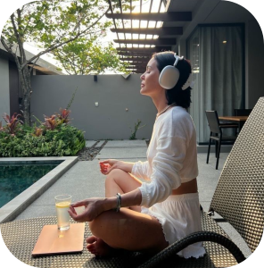

Статьи
Мысль дня
Тесты
Практики
О том, откуда берётся тревога в одиночестве и что на самом деле скрывается за этим чувством.
О том, как создать психологический базис, позволяющий сохранять равновесие в любой жизненной ситуации.
Этот тест поможет понять, насколько вы опираетесь на себя, свои ценностии ощущения — и что можно укрепить.
